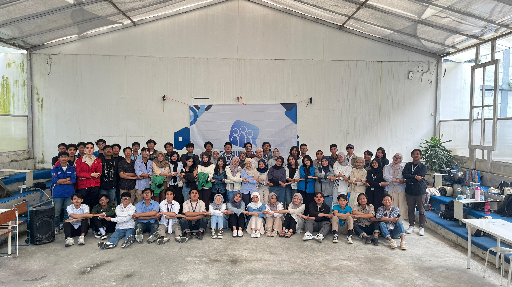
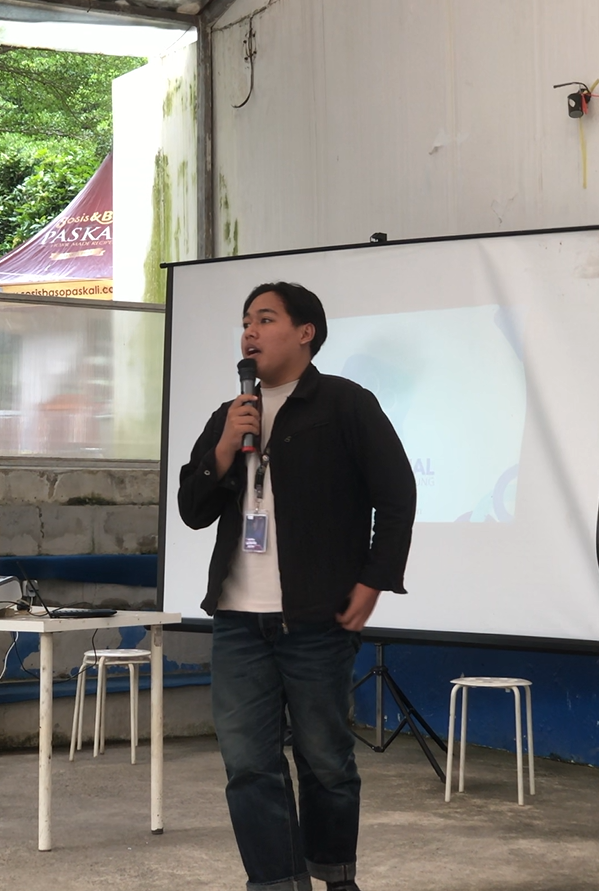
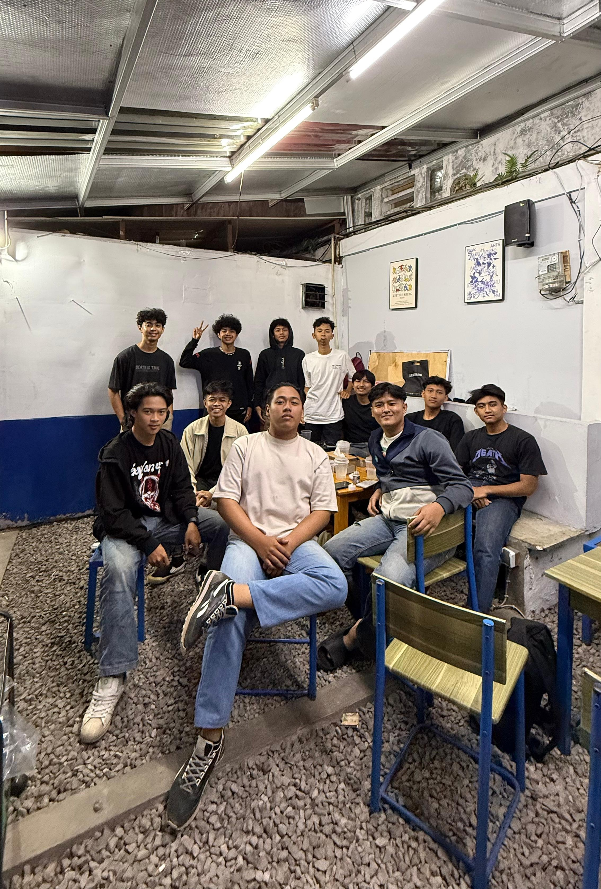

Galeri Kegiatan

Kegiatan Gathering forum sosial bersama seluruh anggota KEMA POLBAN departemen sosial.

Pemaparan tentang forum sosial kepada seluruh peserta Foral 2025.

Pembacaan dan pengesahan SOP Foral 2025 bersama seluruh pihak ormawa.

Ekspedisi Monitoring untuk persiapan rancangan KKN Tematik Sasagara 2025.

Rapat besar pertama sekaligus penanda tanganan SOP dan kontrak kerja seluruh member Explore Nature

Kegiatan Poljar (Polban Mengajar) pertama di SDN Kanaan Indragiri